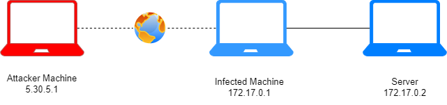

Allow only specified ports
Allow Web Browsing on the Infected MachineTo lower risk a default outbound deny policy should be put into place so that all systems can only reacch outbound on authorized ports. For this lab we will be allowing ports 53 and 443 only. This would prevent and detect any activity to unused/unauthorized ports.
1. By default DROP packets
sudo iptables -P INPUT DROP
sudo iptables -P OUTPUT DROP
2. Allow any outbound connections to destination TCP port 80 and 443
sudo iptables -A OUTPUT -p udp --dport 53 -j ACCEPT
sudo iptables -A OUTPUT -p tcp --dport 443 -j ACCEPT
3. Allowing Established and Related Incoming Connections (
source)
As network traffic generally needs to be two-way – incoming and outgoing – to work properly, it is typical to create a firewall rule that allows established and related incoming traffic, so that the server will allow return traffic for outgoing connections initiated by the server itself.
sudo iptables -A INPUT -m conntrack --ctstate ESTABLISHED,RELATED -j ACCEPT